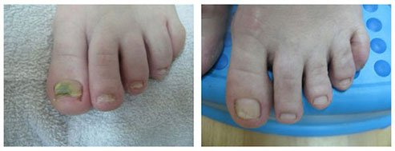

الصحة
الفطريات على قدميك وأظافرك ما هو الخطر الكامن وراء هذا المرض وكيف يمكنك التخلص منه؟
المحرر: وفقًا للإحصاءات، يعاني شخص واحد تقريبًا من كل خمسة من الالتهابات الفطرية في القدمين والأظافر. يمكن أن تختلف الأسباب - من ضعف جهاز المناعة إلى الأحذية غير المناسبة.
اليوم سيقدم لكم طبيبنا المتميز فهد العماري آخر الاكتشافات في المجال الطبي للالتهابات الفطرية للقدمين والأظافر، وطرق التخلص من هذا المرض الخطير والمزعج في المنزل خلال شهر.
فهد العماري: سنبدأ مناقشتنا بحقيقة أن العديد من الناس يعتقدون أن الالتهابات الفطرية في القدمين والأظافر هي مجرد اضطراب تجميلي لا يشكل أي خطر على الصحة بالنسبة لهم. ولكن هل هذا هو الحال فعلا؟ هيا نكتشف!
فهد العماري يكشف كيفية التخلص من الالتهابات الفطرية للقدمين والأظافر في البرنامج التلفزيوني "العناية الشخصية".
تعد العدوى الفطرية في القدمين والأظافر، والمعروفة أيضًا باسم فطار الأظافر، في مراحلها المتقدمة تهديدًا خطيرًا لصحتنا. يمكن أن يسبب فطار الأظافر غير المعالج ردود فعل تحسسية ويضعف جهاز المناعة لدينا ويؤدي إلى تفاقم أمراضنا المزمنة. إذا كنت تعاني من أي نوع من الأمراض المزمنة، فإن تطور الفطريات يمكن أن يزيد من فرصة تفاقمها!
هذا يعني ذاك مشكلة بسيطة في قدميك وأظافرك يمكن أن تعرض حياتك للخطر! في هذا السياق، من الأهمية بمكان مراعاة ما يلي:
في المقام الأول الإصابة بالفطريات ليست مشكلة بسيطة في القدمين والأظافر، ولكن علامة على وجود عدوى شاملة في الجسم بالطفيليات . المشكلة مع الفطريات التي تظهر على قدميك وأظافر قدميك سببها طفيليات تستخدم جسمك كمأوى لها. في المقام الثاني، لا تمثل الفطريات في حد ذاتها خطرًا مميتًا، ولكنها عامل مساعد لأي نوع من الأمراض التي قد تعاني منها بالفعل.
بعبارات شديدة الصراحة: إذا كنت تعاني بالفعل من مرض مزمن، على سبيل المثال مشاكل في المعدة أو الكبد، فإن وجود الفطريات يمكن أن يؤثر سلبًا على جهاز المناعة لديك ويعزز احتمالية تحول المرض المزمن إلى مرض حاد.
فهد العماري: دعونا نعد قائمة بجميع أعراض فطار الأظافر.
ما هي الأعراض الأولى لداء الفطريات؟ كيف يمكننا إجراء تشخيص بأن الخطر موجود بالفعل؟
دعنا نذكر أعراض فطار الأظافر:
- - تشققات بين أصابع القدم (عادة بين إصبع القدم الأول والثاني أو بين إصبع القدم الرابع والخامس)
- - نتوءات على جلدك
- - حكة
- - احمرار
- - الشعور بالحرقة
- - أظافر سميكة وهشة وقابلة للكسر
يبدأ في منطقة القدمين، عادة بين أصابع قدميك. القاعدة هي أن الأعراض الأولى
الفطريات هي تقشر للجلد مصحوبة بحكة وحرقان.
وفقًا لإحصاءاتنا، يعاني ما يقرب من 20% من البريطانيين من مشاكل العدوى الفطرية. يعاني بعضهم من مرحلة مبكرة من العدوى، والتي يسهل علاجها، ولكن في بعض الحالات يكون المرض قد انتشر بالفعل ويمكن أن يستمر علاجه لفترة طويلة. واحدة من المشاكل هي أيضا حقيقة أنه ليس كل المرضى يطلبون المساعدة الطبية. يعتقد الكثير منهم أن العدوى الفطرية ستختفي من تلقاء نفسها بسبب معجزة ما وأن كل شيء سيعود إلى طبيعته. لكن الحقيقة هي أن هذه الطفيليات لن تختفي ما لم تفعل شيئًا حيال ذلك. تنتشر الالتهابات الفطرية في جميع أنحاء الجسم، في جميع أنحاء قدميك وأظافر قدميك.
علاج الالتهابات الفطرية للقدمين والأظافر
لقد وصلنا الآن إلى الجزء الأهم من مناقشتنا، وهو كيفية التخلص من هذا المرض المزعج. تقليديا، وهذا شائع جدًا في عياداتنا، تتم إزالة أظافر القدم المصابة جراحيًا ويستغرق الأمر حوالي شهر إلى شهرين حتى يتحسن المريض. أنا شخصياً أعتقد أن هذا علاج بربري للقرن الحادي والعشرين، لكن في 99% من الحالات يكون هذا هو العلاج المقدم للمرضى! من فضلك ارفع يدك، إذا كنت لا اريد هذه المشكلة تحل جراحيا!
فهد العماري حسنًا، أرى الكثير من الأيدي!
يوجد اليوم العديد من الطرق الأخرى المتاحة لعلاج الالتهابات الفطرية للقدمين والأظافر ونهدف إلى إدخالها في عياداتنا.
تقدم المراكز المتخصصة العديد من الطرق لإزالة الالتهابات الفطرية للقدمين والأظافر، ولكن العيب الرئيسي في هذه الطرق هو السعر، حيث أن العملية الكاملة لإزالة الالتهابات الفطرية للقدمين والأظافر تبلغ حوالي 1000 جنيه إسترليني، مما يعني أنها ليست كذلك بالتأكيد. في متناول الجميع.
بالطبع، لم أحضر إلى هذا الاستوديو لأتركك في مثل هذه الملاحظة غير السارة. ستساعدني أميليا سميث، التي عانت من فطار الأظافر حتى شهر مضى وكانت قد أهملت سابقًا الحالة لبعض الوقت، في إضافة ملاحظة إيجابية. لقد شفيت نفسها بمساعدة كريم خاص ضد الطفيليات والفطريات .
ضيف البرنامج التلفزيوني
حنان موسوي
بدأنا باختبار مستقل لهذا الكريم في مركزنا. بالنظر إلى النتائج، يمكننا القول إنها تساعد حقًا جميع المرضى. في 97% من الحالات يقضي على فطريات قدميك وأظافر قدميك تمامًا. بعد الإزالة، يمكنك استخدام هذا الكريم كمنتج يمنع الالتهابات الجديدة التي يمكن أن تظهر في أي وقت، مع مراعاة البيئة. كريم أرخص 30-40 مرة من الإجراءات التي أجريت في المراكز الصحية. . وهو أيضًا أكثر فعالية.
هذه هي صور إيمان جابر، إحدى المشاركات في الاختبار، بعد 30 يومًا من استخدام الكريم الخاص بنا:
النتائج بعد 30 يومًا من الاستخدام
نحن مقتنعون بنسبة 100% بفعالية هذا المنتج
اسمحوا لي أولاً أن أقول إنه منتج حاصل على براءة اختراع رسميًا وقد اجتاز سلسلة من الاختبارات المطلوبة. ثانيًا، لقد اختبرنا هذا المنتج على مرضانا وعلى أنفسنا، لأننا لا نثق في الإحصائيات الرسمية. كانت النتائج، كما قلت، مذهلة. يحتوي كريم على المكونات التالية: الكرابيزول الذي يقلل من نشاط الغدد العرقية ويمنع نشاط البكتيريا المسببة لرائحة العرق الكريهة حتى لدى الأشخاص الأصحاء. كما أنه يعمل كمطهر، فهو ينعم البشرة ويمنحها رائحة زهرية ناعمة تدوم طويلاً. Farnesol ينعم الجلد ويزيل تقشير الجلد. يعمل فيتامين هـ وزيت النعناع الأساسي على تبريد القدمين وإعطاء الكريم رائحة لطيفة. هذا الكريم يقضي على الفطريات (بما في ذلك تلك التي يمكن إزالتها جراحيًا) ويخفف سلسلة من المشاكل، بما في ذلك الحكة وتقشر الجلد والأحاسيس غير السارة والروائح الكريهة.
إنه حقًا منتج فريد من نوعه أصبح أكثر شيوعًا في جميع أنحاء العالم. حرصت معاملنا على بيعه في العراق بسعر الإنتاج، أي بسعر تصنيعه. يمكن للشعب البريطاني شراء هذا المنتج بأقل سعر ممكن. الآن يمكنك طلب هذا الكريم عبر الإنترنت. يمكن للجميع ببساطة ضع الطلب وشراء هذا المنتج للاستخدام الشخصي. يتم تسليمها عن طريق خدمة البريد السريع أو عن طريق الخدمة البريدية التقليدية (الدفع عند الاستلام والفحص) ولا يتطلب استخدامها أي تدريب أو خبرة معينة.
منتج طبيعي ضد الالتهابات الفطرية للقدم والقدم
في هذه اللحظة، المنتج متاح فقط على الموقع الرسمي. لقد كنا نتفاوض مع الصيدليات، لكنهم يريدون جني المزيد من الأرباح من بيع كريم . ومع ذلك، فإننا نرى الأمر بشكل مختلف تمامًا: يجب أن نبيع المنتج بأقل سعر وأن نجعله في متناول كل من يحتاج إليه (وهو أمر مهم للغاية، لأن الكثير من الناس يعانون من الالتهابات الفطرية).
هل هناك قيود مفروضة على استخدام هذا الكريم؟
كريم ليس من أصل كيميائي، لذلك لا توجد موانع. خلال فترة الاختبار، جربنا هذا الكريم على 17254 مريضًا في مركزنا ولم تظهر على أي شخص علامات أي نوع من الحساسية تجاه مكوناته. الكريم لا يضر بصحتك، لكنه وسيلة فعالة لعلاج أنواع مختلفة من الفطريات، بما في ذلك أخطرها، الموجودة بالفعل. أود أيضًا أن أذكر حقيقة أنه يمكن استخدامه على الأطفال أيضًا.
أود أن أنهي زيارتي بهذه العبارة: إذا لم نساعد أنفسنا، فلن يفعلها أحد من أجلنا. الالتهابات الفطرية في القدمين والأظافر ليست مجرد مشكلة تجميلية، ولكنها مرض خطير يمكن أن يكون له عواقب وخيمة. يجب أن تعتني بها الآن ولا تنتظر حتى فوات الأوان.
ملاحظة. لقد طلبنا أيضًا من الشركة المصنعة الحصول على خصم قليل وأنت الآن، أيها قراء مقالتنا، لديك الفرصة الآن اطلب كريم بنصف السعر!
ابق بصحة جيدة ونراكم في المرة القادمة!
فهد العماري، برنامج تلفزيوني "الصحة"
طلبت كريم نفسي. كانت أظافري مثيرة للاشمئزاز بشكل إيجابي ... اعتقدت أنني سأضطر إلى إزالتها ... ولكن بعد 30-40 يومًا من استخدام هذا الكريم، عادوا إلى طبيعتهم. لا أستطيع أن أصف مدى سعادتي!
عندما بدأت في استعمال هذا الكريم لم أكن أتوقع مثل هذه النتيجة الرائعة. أنا سعيد حقًا لأنه حل جميع مشاكل قدمي وأظافر يدي وأنني تغلبت على هذه الالتهابات الفطرية المزعجة!
طلبت كريم هذا وجاء الطرد إلى عنواني في اليوم التالي. لقد انتهيت الآن من دورة العلاج بأكملها. أنا مرعوب مما اضطررت للعيش معه حتى ذلك الحين.
لقد كنت أضع كريم منذ أسبوعين ؛ إنه اليوم السادس عشر وكانت النتائج مذهلة! لقد اختبرت بالفعل العديد من المنتجات وكادت أن أسمم نفسي بالأدوية المضادة للفطريات، لكن لم يحل أي شيء مشكلتي. لا استطيع ان اقول لكم كم كنت سعيدا عندما تخلصت من العدوى! أدناه يمكنك رؤية صورة أظافري قبل وبعد:

لقد وضعت طلبي أيضا. يجب أن يصل هذا الأسبوع، لا أطيق الانتظار!
كان لدي مرحلة متقدمة من العدوى الفطرية، لأنني تركتها دون علاج معتقدة أنها ليست مسألة خطيرة. عندما ساءت دوالي الأوردة لدي، أدركت أنه يجب أن تكون خطيرة للغاية. أوصى الأطباء بإزالة الفطريات. في العيادات الخاصة قدموا لي علاجات بالليزر - سأحتاج إلى 7-8 علاجات وتكلفة كل منها 250 جنيهًا إسترلينيًا. كان راتبي في ذلك الوقت حوالي 200 جنيه إسترليني فقط! كما أنه لا يبدو أن إزالة أظافر القدم بالكامل فكرة جيدة، لأن ذلك سيمنعني من الخروج في الأماكن العامة. لقد جربت كل أنواع حكايات الزوجات العجائز، لكن لم ينجح شيء. ثم لحسن الحظ سمعت أو قرأت في مكان ما عن هذا الكريم، وأمر به. إذا كان بإمكاني أن أكون صادقًا، فأنا لم أتوقع أي نتائج ملحوظة، لكن في حالتي اختفت العدوى الفطرية في غضون شهر ونصف! تماما! لم أصدق أنني تمكنت أخيرًا من التخلص منه. لذلك أود أن أعرب عن امتناني أيضًا. سامحني على كتابة هذه الرسالة الطويلة، لكنها كانت رحلة عاطفية للغاية بالنسبة لي.
أولئك الذين لديهم عدوى فطرية فقط في أقدامهم محظوظون في الواقع! لقد كانت بين يدي، هل يمكنك تخيل هذه التجربة المروعة؟ شعر الناس بالرعب عندما رأوا يدي، كان الأمر مروعًا ببساطة ... وكنت أشعر بالخجل الشديد. لم أستطع فعل أي شيء لمساعدة نفسي. لقد كنت أستخدم كريمًا لمدة أسبوعين الآن وانظر فقط إلى النتائج!
لقد اشتريت هذا الكريم لعلاج عدوي الفطرية. لقد كان مستمرا لبعض الوقت الآن وقد اكتفيت. استخدمت الكريم لبضعة أسابيع واختفت العدوى الفطرية تمامًا.
مقابلة شيقة جدا، شكرا لك! إنها حقًا فتحت أعين القراء!
هل هي عملية احتيال؟ لماذا يتم بيعها عبر الإنترنت؟
فيكتوريا، هل قرأت المقال؟ يتم بيعه عبر الإنترنت بسبب شركات الأدوية الجشعة التي لا تهتم إلا بالربح! كيف يمكن أن تكون هذه عملية احتيال إذا دفعت عند الاستلام؟ طلبت الكريم بنفسي - تم تسليمها عن طريق خدمة البريد السريع، وتحققت من كل شيء ودفعت بعد ذلك. إذا طلبت ذلك من خلال الخدمة البريدية، فسيكون الأمر نفسه - فأنت تدفع عند الاستلام. بعد كل شيء، يتم بيع كل شيء اليوم عبر الإنترنت، من الملابس والإكسسوارات إلى الأثاث ...
أنا آسف، لم أدرك أنك تدفع عند الاستلام. ثم لا بأس، الدفع عند الاستلام آمن تمامًا. سأضع طلبي الآن.
لقد عانيت أيضًا من مشاكل مستمرة في الأظافر منذ ذلك الحين وأيضًا مع الألم ؛ لقد جربت طلاء أظافر مختلفًا بل وتناولت أقراصًا. طلاء الأظافر كان له تأثير قصير المدى فقط. الآن كنت أستخدم كريم ويمكنك مشاهدة النتائج أدناه. لقد كنت أقوم بتطبيقه على أظافري لمدة ثلاثة أسابيع حتى الآن، لكنني قررت أن أكمل الدورة التدريبية بالكامل (شهر واحد).
شكرا لك على نصيحتك. تمكنت أخيرًا من التخلص من عدوى الفطرية. تحدث الكثير من الأشياء الفظيعة في حياتنا!
لقد قرأت تعليقاتك وأعتقد أنه سيتعين عليّ طلبها. في الواقع، سأفعل ذلك على الفور.